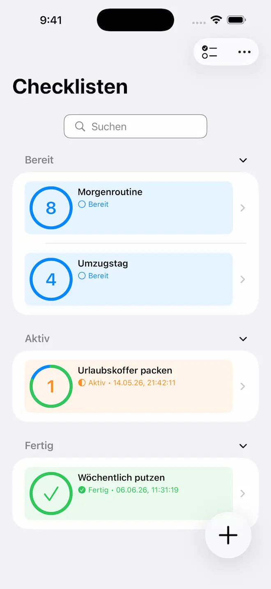
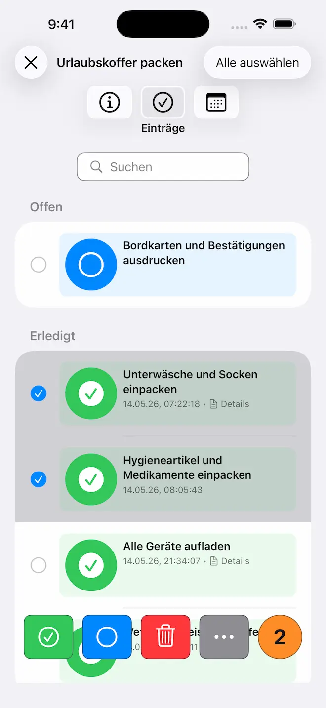
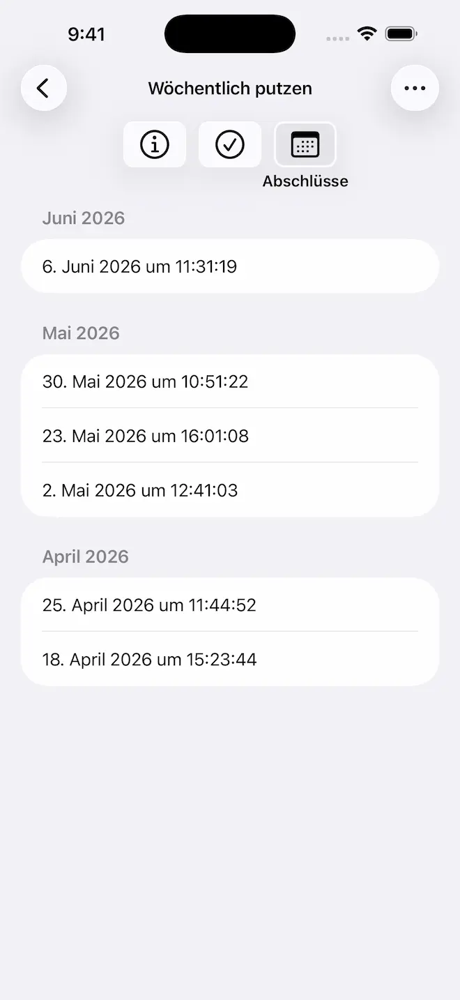
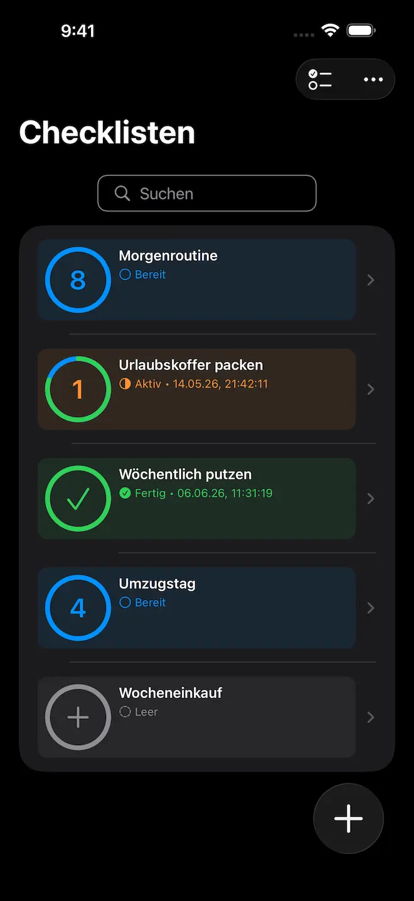

Einfache Checklisten. Volle Privatsphäre.
Organisiert bleiben mit Checkomat — der privaten Checklisten-App für Aufgaben, Einkäufe, Reisen, Gewohnheiten und Inspektionen.


Schluss mit unübersichtlichen Notizen und verstreuten Listen. Checkomat ist eine einfache und praktische Checklisten-App, die dir hilft, alles vom täglichen To-Do bis zum Kofferpacken für den Urlaub zu organisieren. Erstelle unbegrenzte Listen für Aufgaben, Einkäufe, Events, Umzüge und Routinen — in einer klaren, ablenkungsfreien Oberfläche, die deine Privatsphäre respektiert.
Bereit für mehr Ordnung? Lade Checkomat noch heute herunter.
Warum Checkomat
- 100% privat & unter deiner Kontrolle — Deine Daten bleiben standardmäßig auf deinem Gerät. Die optionale iCloud-Synchronisierung hält alles auf all deinen Apple-Geräten aktuell — vollständig als Opt-in, ausschließlich über deinen persönlichen, privaten iCloud-Container.
- Minimalistisch & einfach — Schnelle, intuitive Oberfläche, die sich auf das Wesentliche konzentriert. Kein Ballast, keine unnötige Komplexität.
- ADHS-freundlich — Die klare Struktur und das ablenkungsfreie Design helfen dir, fokussiert und organisiert zu bleiben.
- Vollständig barrierefrei — Umfassende VoiceOver-Unterstützung für inklusive Produktivität.
Starke Funktionen für den Alltag
Alles, was du zur Organisation brauchst — ohne unnötigen Schnickschnack.
Optionale iCloud-Synchronisierung
Aktiviere die iCloud-Synchronisierung in den Einstellungen und deine Checklisten bleiben auf all deinen Apple-Geräten automatisch aktuell. Vollständig als Opt-in — wer lieber offline bleiben möchte, muss nichts ändern.
Unbegrenzte Checklisten
Erstelle so viele Checklisten und Einträge wie du brauchst — für Reisen, Einkäufe, Events oder dein Haushaltsinventar. Keine Limits für Checklisten oder Einträge.
Zeitstempel & Abschlusshistorie
Verfolge genau, wann Checklisten und Einträge abgeschlossen wurden. Behalte eine dedizierte Historie für Wartungsprotokolle, Inspektionen und Nachweise.
Intelligente Suche & Filter
Finde jede Checkliste oder jeden Eintrag sofort mit leistungsstarker Suche und Filtern. Suche nach Name oder Titel und filtere nach Status, um genau das zu finden, was du brauchst.

Weitere Funktionen
- Listenverwaltung — Füge Checklisten und Einträge in beliebiger Reihenfolge hinzu, mit optionalen Details. Verschiebe und kopiere Einträge mühelos zwischen Checklisten.
- Gruppierung nach Status — Zeige Checklisten und Einträge nach Erledigungsstatus gruppiert an. Sieh auf einen Blick, was fertig ist und was noch aussteht.
- Flexible Sortierung — Sortiere Checklisten und Einträge nach Name, Titel oder benutzerdefinierter Reihenfolge.
- Einfaches Teilen — Teile Checklisten via Mail, Nachrichten oder AirDrop. Exportiere sie für Backups oder zur Zusammenarbeit.
- Intelligenter Import — Importiere Checklisten und Einträge aus externen Quellen. Zeige eine Vorschau an, bevor du sie hinzufügst.
Anwendungsbereiche
Von schnellen Einkaufslisten bis zu detaillierten Inspektionen — Checkomat passt sich deinen Bedürfnissen an.
Lebensmitteleinkauf
Erstelle smarte Einkaufslisten und behalte Vorräte im Blick. Organisiere Artikel nach Abteilung oder Kategorie, damit du im Supermarkt nichts vergisst.
Reise & Packen
Erstelle Packlisten für jede Reise — Geschäftsreisen, Strandurlaub oder Camping-Abenteuer. Stelle sicher, dass du alles dabei hast.
Gewohnheiten & Routinen
Verfolge tägliche, wöchentliche oder monatliche Gewohnheiten. Baue nachhaltige Routinen für Sport, Meditation, Hausarbeit oder jedes andere Ziel auf.
Inspektionen & Wartung
Professionelle Checklisten für effiziente Inspektionen, Gerätewartung und Qualitätssicherung. Zeitstempel und Abschlusshistorie liefern lückenlose Nachweise.
Umzüge
Bleib beim Umzug organisiert mit detaillierten Checklisten. Verwalte Kartons, koordiniere Versorger, halte Adressänderungen fest und behalte alle Details des Übergangs im Griff.

Privatsphäre by Design
Kein Abo. Kein Tracking. Kein extra Konto.
Checkomat funktioniert standardmäßig vollständig offline. Deine Checklisten und persönlichen Daten bleiben auf deinem iPhone, iPad oder Mac — nur du hast Zugriff darauf.
Möchtest du deine Checklisten auf all deinen Apple-Geräten nutzen? Die optionale iCloud-Synchronisierung ist vollständig Opt-in und verwendet ausschließlich deinen persönlichen, privaten iCloud-Container. Kein Tracking, keine Analyse, keine Werbung — egal ob du synchronisierst oder nicht.
Einfach & effektiv
Ob du tägliche Erledigungen planst, für eine Reise packst oder langfristige Ziele verfolgst — Checkomat ist dein zuverlässiger Begleiter. Einfach, privat und ohne Abo.
Die besten Produktivitäts-Apps halten sich zurück und lassen dich arbeiten. Das ist Checkomat — keine überflüssigen Funktionen, keine überladene Oberfläche, einfach saubere Checklisten, die funktionieren.